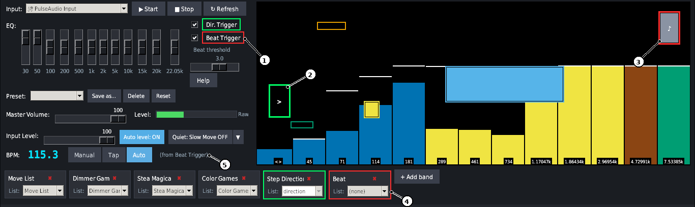

For: FullPlayer
A square on the graph says: when the sound of these frequencies is this loud, step the list. Its left and right edges are the frequencies (the numbers under the bars, in Hz), its bottom and top are the loudness. A bar touches the square when it reaches into it.

Both ticked: the Step Direction square on the left, the Beat square at the top right, their bands.
| 1 | Dir. Trigger and Beat Trigger ticked. |
| 2 | The Dir. Trigger square (green frame), with > or <: each time it is touched, the direction of Step Direction turns round - the same as the Step Direction of the main bar and of the remote. |
| 3 | The Beat square (red frame, ♪): it does not depend on where it is; it lights on every kick of the music. |
| 4 | Their bands: Beat - choose in List: the list it steps, one kick = one step; Step Direction. |
| 5 | With the Beat Trigger on, Auto BPM follows the kicks it finds. |
Beat threshold: lower = more sensitive (more kicks found), higher = only clear kicks. 3.0 ignores most bass guitar notes.